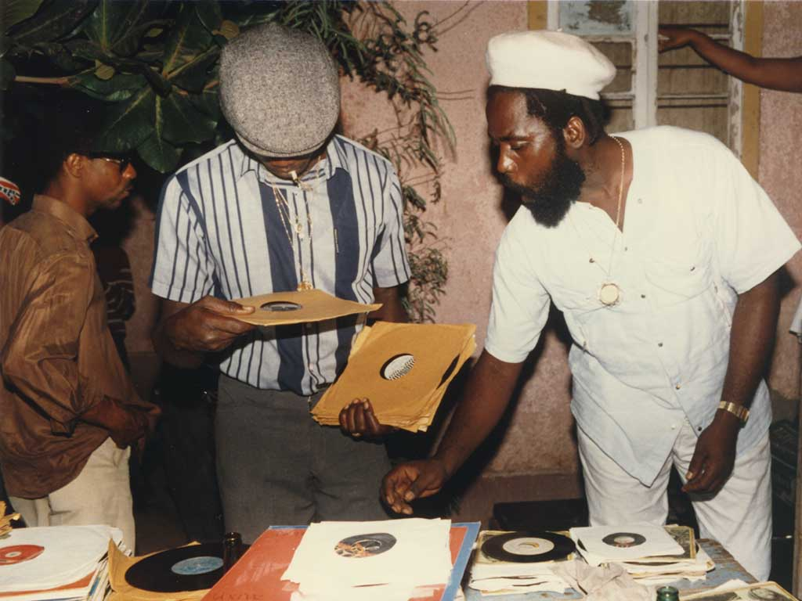
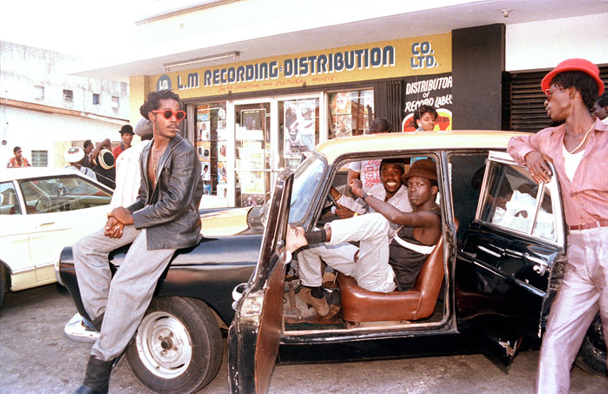
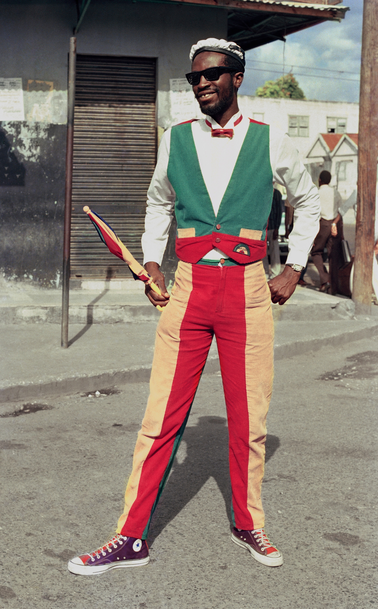

Social and political changes in late-1970s Jamaica were reflected in the shift away from the more internationally oriented roots reggae towards a style geared more towards local consumption and in tune with the music that Jamaicans had experienced when sound systems performed live. Themes of social injustice, repatriation and the Rastafari movement were overtaken by lyrics about dancing, violence and sexuality.


